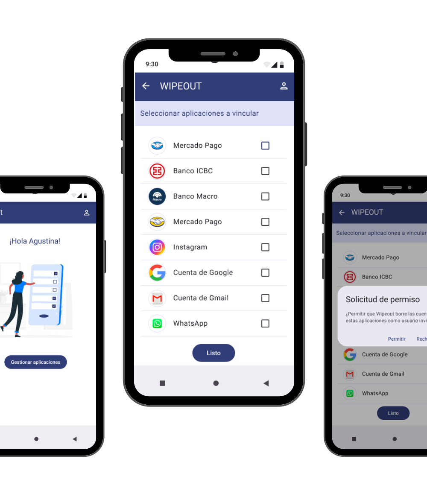

Usuario Principal

Flujo pensado para la persona dueña del dispositivo: acceso rápido y claro para iniciar el proceso de protección, con mensajes simples y jerarquía visual para reducir fricción.
El usuario principal crea una cuenta y configura previamente qué aplicaciones, cuentas o credenciales desea proteger.
En caso de emergencia, esta configuración permite ejecutar acciones críticas de forma rápida desde otro dispositivo, minimizando el riesgo de acceso no autorizado.